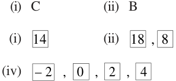
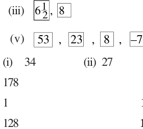
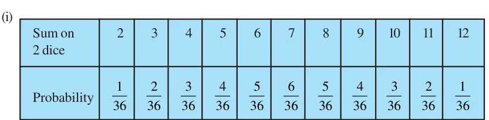

<!DOCTYPE html>
<html lang="en">
<head>
<meta charset="UTF-8">
<meta name="viewport" content="width=device-width,initial-scale=1">
<title>Answers — Appendix</title>
<meta name="description" content="Class 10 Mathematics · Appendix · Answers">
<link rel="icon" href="data:image/svg+xml,<svg xmlns='http://www.w3.org/2000/svg' viewBox='0 0 100 100'><text y='.9em' font-size='90'>📘</text></svg>">
<link rel="stylesheet" href="../../../assets/book.css">
<link rel="stylesheet" href="https://cdn.jsdelivr.net/npm/katex@0.16.11/dist/katex.min.css" crossorigin="anonymous">
</head>
<body>
<header class="topbar">
<div class="topbar-in">
  <div class="crumb">
    <span class="c1"><a href="../../../index.html">Library</a> · <a href="../../index.html">Class 10 Mathematics</a></span>
    <span class="c2">Appendix · Answers</span>
  </div>
  <a class="tb-btn" data-nav="prev" href="../../90-appendix/02-appendix-a2-mathematical-modelling/index.html" title="Appendix A2 Mathematical Modelling">←</a>
  <details class="drawer"><summary class="tb-btn" title="Sections in this chapter">☰</summary>
<div class="drawer-panel"><div class="dh">Appendix</div><a href="../00-front-matter/index.html">Front Matter</a><a href="../01-appendix-a1-proofs-in-mathematics/index.html">Appendix A1 Proofs in Mathematics</a><a href="../02-appendix-a2-mathematical-modelling/index.html">Appendix A2 Mathematical Modelling</a><a href="../03-answers/index.html" aria-current="page">Answers</a></div></details>
  <span class="tb-btn" aria-disabled="true">→</span>
  <button class="tb-btn" data-theme-toggle title="Toggle light / dark" aria-label="Toggle light or dark theme">◐</button>
</div>
<div class="progress"><span style="width:100.0%"></span></div>
</header>
<main class="wrap">
<div class="sec-head">
  <p class="eyebrow"><a href="../index.html">Appendix · Appendix</a></p>
  <h1>Answers</h1>
  <p class="sec-meta">4 figures</p>
</div>
<article class="prose">
<h3 class="callout-h" id="s-exercise-1-1">EXERCISE 1.1</h3>
<ul class="qlist">
<li><span class="mk">1.</span><span class="lt">(i) \(2^{2} \times 5 \times 7\) (ii) \(2^{2} \times 3 \times 13\) (iii) \(3^{2} \times 5^{2} \times 17\)</span></li>
<li><span class="mk">(iv)</span><span class="lt">\(5 \times 7 \times 11 \times 13\) (v) \(17 \times 19 \times 23\)</span></li>
<li><span class="mk">2.</span><span class="lt">(i) \(LCM = 182\); \(HCF = 13\) (ii) \(LCM = 23460\); \(HCF = 2\) (iii) \(LCM = 3024\); \(HCF = 6\)</span></li>
<li><span class="mk">3.</span><span class="lt">(i) \(LCM = 420\); \(HCF = 3\) (ii) \(LCM = 11339\); \(HCF = 1\) (iii) \(LCM = 1800\); \(HCF = 1\)</span></li>
<li><span class="mk">4.</span><span class="lt">22338 7. 36 minutes</span></li>
</ul>
<h3 class="callout-h" id="s-exercise-2-1">EXERCISE 2.1</h3>
<ul class="qlist">
<li><span class="mk">1.</span><span class="lt">(i) No zeroes (ii) 1 (iii) 3 (iv) 2 (v) 4 (vi) 3</span></li>
</ul>
<h3 class="callout-h" id="s-exercise-2-2">EXERCISE 2.2</h3>
<ul class="qlist">
<li><span class="mk">1.</span><span class="lt">(i) \(- 2\), 4 (ii) \(\frac{1}{2}\) , \(\frac{1}{2}\) (iii) \(- \frac{1}{3}\) , \(\frac{3}{2}\)</span></li>
</ul>
<div class="mathblock"><p>\(\frac{4}{3}\)</p></div>
<ul class="qlist">
<li><span class="mk">(iv)</span><span class="lt">\(- 2\), 0 (v) \(- 15\), 15 (vi) \(- 1\),</span></li>
<li><span class="mk">2.</span><span class="lt">(i) \(4x^{2} - x - 4\) (ii) \(3x^{2} - 3 2 x + 1\) (iii) \(x^{2} + 5\)</span></li>
<li><span class="mk">(iv)</span><span class="lt">\(x^{2} - x + 1\) (v) \(4x^{2} + x + 1\) (vi) \(x^{2} - 4x + 1\)</span></li>
</ul>
<h3 class="callout-h" id="s-exercise-3-1">EXERCISE 3.1</h3>
<ul class="qlist">
<li><span class="mk">1.</span><span class="lt">(i) Required pair of linear equations is</span></li>
</ul>
<p>\(x + y = 10\); \(x - y = 4\), where x is the number of girls and y is the number of boys. To solve graphically draw the graphs of these equations on the same axes on graph paper.</p>
<p>Girls \(= 7\), Boys \(= 3\).</p>
<p>/H</p>
<ul class="qlist">
<li><span class="mk">(ii)</span><span class="lt">Required pair of linear equations is</span></li>
</ul>
<p>\(5x + 7y = 50\); \(7x + 5y = 46\), where x and y represent the cost (in `) of a pencil and of a pen respectively.</p>
<p>To solve graphically, draw the graphs of these equations on the same axes on graph paper.</p>
<p>Cost of one pencil = ` 3, Cost of one pen = ` 5</p>
<ul class="qlist">
<li><span class="mk">2.</span><span class="lt">(i) Intersect at a point (ii) Coincident (iii) Parallel</span></li>
<li><span class="mk">3.</span><span class="lt">(i) Consistent (ii) Inconsistent (iii) Consistent</span></li>
<li><span class="mk">(iv)</span><span class="lt">Consistent (v) Consistent</span></li>
<li><span class="mk">4.</span><span class="lt">(i) Consistent (ii) Inconsistent (iii) Consistent (iv) Inconsistent</span></li>
</ul>
<p>The solution of (i) above, is given by \(y = 5 - x\), where x can take any value, i.e., there are infinitely many solutions.</p>
<p>The solution of (iii) above is \(x = 2\), \(y = 2\), i.e., unique solution.</p>
<ul class="qlist">
<li><span class="mk">5.</span><span class="lt">Length \(= 20 m\) and breadth \(= 16 m\).</span></li>
<li><span class="mk">6.</span><span class="lt">One possible answer for the three parts:</span></li>
<li><span class="mk">(i)</span><span class="lt">\(3x + 2y - 7 = 0\) (ii) \(2x + 3y - 12 = 0\) (iii) \(4x + 6y - 16 = 0\)</span></li>
<li><span class="mk">7.</span><span class="lt">Vertices of the triangle are ( \(- 1\), 0), (4, 0) and (2, 3).</span></li>
</ul>
<h3 class="callout-h" id="s-exercise-3-2">EXERCISE 3.2</h3>
<ul class="qlist">
<li><span class="mk">1.</span><span class="lt">(i) \(x = 9\), \(y = 5\) (ii) \(s = 9\), \(t = 6\) (iii) \(y = 3x - 3\),</span></li>
</ul>
<p>where x can take any real value, i.e., infinitely many solutions.</p>
<ul class="qlist">
<li><span class="mk">(iv)</span><span class="lt">\(x = 2\), \(y = 3\) (v) \(x = 0\), \(y = 0\) (vi) \(x = 2\), \(y = 3\)</span></li>
<li><span class="mk">2.</span><span class="lt">\(x = - 2\), \(y = 5\); \(m = - 1\)</span></li>
<li><span class="mk">3.</span><span class="lt">(i) \(x - y = 26\), \(x = 3y\), where x and y are two numbers (x &gt; y); \(x = 39\), \(y = 13\).</span></li>
<li><span class="mk">(ii)</span><span class="lt">\(x - y = 18\), \(x + y = 180\), where x and y are the measures of the two angles in degrees;</span></li>
</ul>
<div class="mathblock"><p>\(x = 99\), \(y = 81\).</p></div>
<ul class="qlist">
<li><span class="mk">(iii)</span><span class="lt">\(7x + 6y = 3800\), \(3x + 5y = 1750\), where x and y are the costs (in `) of one bat and one</span></li>
</ul>
<p>ball respectively; \(x = 500\), \(y = 50\).</p>
<ul class="qlist">
<li><span class="mk">(iv)</span><span class="lt">\(x + 10y = 105\), \(x + 15y = 155\), where x is the fixed charge (in `) and y is the charge (in</span></li>
</ul>
<div class="mathblock"><p>` per km); \(x =5\), \(y = 10\); ` 255.</p></div>
<ul class="qlist">
<li><span class="mk">(v)</span><span class="lt">\(11x - 9y + 4 = 0\), \(6x - 5y + 3 = 0\), where x and y are numerator and denominator of the</span></li>
</ul>
<div class="mathblock"><p>fraction; \(\frac{7}{9}\) (x \(= 7\), \(y = 9)\).</p></div>
<ul class="qlist">
<li><span class="mk">(vi)</span><span class="lt">\(x - 3y - 10 = 0\), \(x - 7y + 30 = 0\), where x and y are the ages in years of Jacob and his</span></li>
</ul>
<div class="mathblock"><p>son; \(x = 40\), \(y = 10\).</p></div>
<h3 class="callout-h" id="s-exercise-3-3">EXERCISE 3.3</h3>
<ul class="qlist">
<li><span class="mk">1.</span><span class="lt">(i) \(x = \frac{19}{5}\) , \(y = \frac{6}{5}\) (ii) \(x = 2\), \(y = 1\) (iii) \(x = \frac{9}{13}\) , \(y = - \frac{5}{13}\)</span></li>
<li><span class="mk">(iv)</span><span class="lt">\(x = 2\), \(y = - 3\)</span></li>
<li><span class="mk">2.</span><span class="lt">(i) \(x - y + 2 = 0\), \(2x - y - 1 = 0\), where x and y are the numerator and denominator of the</span></li>
</ul>
<div class="mathblock"><p>fraction; \(\frac{3}{5}\) ⋅</p></div>
<ul class="qlist">
<li><span class="mk">(ii)</span><span class="lt">\(x - 3y + 10 = 0\), \(x - 2y - 10 = 0\), where x and y are the ages (in years) of Nuri and Sonu</span></li>
</ul>
<p>respectively. Age of Nuri (x) \(= 50\), Age of Sonu (y) \(= 20\).</p>
<ul class="qlist">
<li><span class="mk">(iii)</span><span class="lt">\(x + y = 9\), \(8x - y = 0\), where x and y are respectively the tens and units digits of the</span></li>
</ul>
<p>number; 18.</p>
<ul class="qlist">
<li><span class="mk">(iv)</span><span class="lt">\(x + 2y = 40\), \(x + y = 25\), where x and y are respectively the number of ` 50 and ` 100</span></li>
</ul>
<div class="mathblock"><p>notes; \(x = 10\), \(y = 15\).</p></div>
<ul class="qlist">
<li><span class="mk">(v)</span><span class="lt">\(x + 4y = 27\), \(x + 2y = 21\), where x is the fixed charge (in `) and y is the additional</span></li>
</ul>
<p>charge (in `) per day; \(x = 15\), \(y = 3\).</p>
<h2 class="callout-h" id="s-exercise-4-1">EXERCISE 4.1</h2>
<ul class="qlist">
<li><span class="mk">1.</span><span class="lt">(i) Yes (ii) Yes (iii) No (iv) Yes</span></li>
<li><span class="mk">(v)</span><span class="lt">Yes (vi) No (vii) No (viii) Yes</span></li>
<li><span class="mk">2.</span><span class="lt">(i) \(2x^{2} + x - 528 = 0\), where x is breadth (in metres) of the plot.</span></li>
<li><span class="mk">(ii)</span><span class="lt">\(x^{2} + x - 306 = 0\), where x is the smaller integer.</span></li>
<li><span class="mk">(iii)</span><span class="lt">\(x^{2} + 32x - 273 = 0\), where x (in years) is the present age of Rohan.</span></li>
<li><span class="mk">(iv)</span><span class="lt">\(u^{2} - 8u - 1280 = 0\), where u (in km/h) is the speed of the train.</span></li>
</ul>
<h3 class="callout-h" id="s-exercise-4-2">EXERCISE 4.2</h3>
<ul class="qlist">
<li><span class="mk">1.</span><span class="lt">(i) \(- 2\), 5 (ii) \(- 2\), \(\frac{3}{2}\) (iii) \(- \frac{5}{2}\) , \(- 2\)</span></li>
<li><span class="mk">(iv)</span><span class="lt">\(\frac{1}{4}\) , \(\frac{1}{4}\) (v) \(\frac{1}{10}\) , \(\frac{1}{10}\)</span></li>
<li><span class="mk">2.</span><span class="lt">(i) 9, 36 (ii) 25, 30</span></li>
<li><span class="mk">3.</span><span class="lt">Numbers are 13 and 14. 4. Positive integers are 13 and 14.</span></li>
<li><span class="mk">5.</span><span class="lt">5 cm and 12 cm 6. Number of articles \(= 6\), Cost of each article = ` 15</span></li>
</ul>
<p>/H</p>
<h3 class="callout-h" id="s-exercise-4-3">EXERCISE 4.3</h3>
<ul class="qlist">
<li><span class="mk">1.</span><span class="lt">(i) Real roots do not exist (ii) Equal roots; \(\frac{2}{3}\) , \(\frac{2}{3}\) (iii) Distinct roots; \(\frac{3 \pm 3}{2}\)</span></li>
<li><span class="mk">2.</span><span class="lt">(i) \(k = \pm 2 6\) (ii) \(k = 6\)</span></li>
<li><span class="mk">3.</span><span class="lt">Yes. 40 m, 20 m 4. No 5. Yes. 20 m, 20 m</span></li>
</ul>
<h3 class="callout-h" id="s-exercise-5-1">EXERCISE 5.1</h3>
<ul class="qlist">
<li><span class="mk">1.</span><span class="lt">(i) Yes. 15, 23, 31, . . . forms an AP as each succeeding term is obtained by adding 8 in</span></li>
</ul>
<p>its preceding term.</p>
<ul class="qlist">
<li><span class="mk">(ii)</span><span class="lt">No. Volumes are V, \(\frac{3V}{4}\) , \(\frac{3}{4} V\),  (iii) Yes. 150, 200, 250, . . . form an AP.</span></li>
<li><span class="mk">(iv)</span><span class="lt">No. Amounts are \(10000 1 + \frac{8}{100}\) , \(10000 1 + \frac{8}{100}\) , \(10000 1 + \frac{8}{100}\) , </span></li>
</ul>
<ul class="qlist">
<li><span class="mk">2.</span><span class="lt">(i) 10, 20, 30, 40 (ii) \(- 2\), \(- 2\), \(- 2\), \(- 2\) (iii) 4, 1, \(- 2\), \(- 5\)</span></li>
<li><span class="mk">(iv)</span><span class="lt">\(- 1\), \(- \frac{1}{2}\) , 0, \(\frac{1}{2}\) (v) \(- 1.25\), \(- 1\). 50, \(- 1.75\), \(- 2.0\)</span></li>
<li><span class="mk">3.</span><span class="lt">(i) \(a = 3\), \(d = - 2\) (ii) \(a = - 5\), \(d = 4\)</span></li>
<li><span class="mk">(iii)</span><span class="lt">\(a = \frac{1}{3}\) , \(d = \frac{4}{3}\) (iv) \(a = 0.6\), \(d = 1.1\)</span></li>
<li><span class="mk">4.</span><span class="lt">(i) No (ii) Yes. \(d = \frac{1}{2}\) ; 4, 9 ,2 5</span></li>
<li><span class="mk">(iii)</span><span class="lt">Yes. \(d = - 2\); \(- 9.2\), \(- 11.2\), \(- 13.2\) (iv) Yes. \(d = 4\); 6, 10, 14</span></li>
<li><span class="mk">(v)</span><span class="lt">Yes. \(d = 2\) ; \(3 + 4 2\) , \(3 + 5 2\) , \(3 + 6 2\) (vi) No</span></li>
<li><span class="mk">(vii)</span><span class="lt">Yes. \(d = - 4\); \(- 16\), \(- 20\), \(- 24\) (viii) Yes. \(d = 0\); \(- \frac{1}{2}\) , \(- \frac{1}{2}\) , \(- \frac{1}{2}\)</span></li>
<li><span class="mk">(ix)</span><span class="lt">No (x) Yes. \(d = a\); 5a, 6a, 7a</span></li>
<li><span class="mk">(xi)</span><span class="lt">No (xii) Yes. \(d = 2\) ; 50 , 72 , 98</span></li>
<li><span class="mk">(xiii)</span><span class="lt">No (xiv) No (xv) Yes. \(d = 24\); 97, 121, 145</span></li>
</ul>
<h3 class="callout-h" id="s-exercise-5-2">EXERCISE 5.2</h3>
<ul class="qlist">
<li><span class="mk">1.</span><span class="lt">(i) \(a_{n} = 28\) (ii) \(d = 2\) (iii) \(a = 46\) (iv) \(n = 10\) (v) \(a_{n} = 3.5\)</span></li>
</ul>
<p>2.</p>
<figure class="fig"></figure>
<figure class="fig"></figure>
<p>3.</p>
<ul class="qlist">
<li><span class="mk">4.</span><span class="lt">16th term 5.</span></li>
<li><span class="mk">6.</span><span class="lt">No 7. 8.</span></li>
<li><span class="mk">9.</span><span class="lt">5th term 10. 11. 65th term</span></li>
<li><span class="mk">12.</span><span class="lt">100 13. 14.</span></li>
<li><span class="mk">15.</span><span class="lt">13 16. 4, 10, 16, 22, . . .</span></li>
<li><span class="mk">17.</span><span class="lt">20th term from the last term is 158.</span></li>
<li><span class="mk">18.</span><span class="lt">\(- 13\), \(- 8\), \(- 3 19\). 11th year 20. 10</span></li>
</ul>
<h3 class="callout-h" id="s-exercise-5-3">EXERCISE 5.3</h3>
<ul class="qlist">
<li><span class="mk">1.</span><span class="lt">(i) 245 (ii) \(- 180\) (iii) 5505 (iv) \(\frac{33}{20}\)</span></li>
<li><span class="mk">2.</span><span class="lt">(i) \(1046 \frac{1}{2}\) (ii) 286 (iii) \(- 8930\)</span></li>
<li><span class="mk">3.</span><span class="lt">(i) \(n = 16\), \(S_{n} = 440\) (ii) \(d = 7\) , \(S_{13} = 273\) (iii) \(a = 4\), \(S_{12} = 246\)</span></li>
</ul>
<div class="mathblock"><p>\(\frac{35}{3} \frac{85}{3}\)</p></div>
<ul class="qlist">
<li><span class="mk">(iv)</span><span class="lt">\(d = - 1\), \(a_{10} = 8\) (v) \(a = -\) , \(a_{9} =\) (vi) \(n = 5\), \(a_{n} = 34\)</span></li>
<li><span class="mk">(vii)</span><span class="lt">\(n = 6\), \(d = \frac{54}{5}\) (viii) \(n = 7\), \(a = - 8\) (ix) \(d = 6\)</span></li>
<li><span class="mk">(x)</span><span class="lt">\(a = 4\)</span></li>
<li><span class="mk">4.</span><span class="lt">12. By putting \(a = 9\), \(d = 8\), \(S = 636\) in the formula \(S = \frac{n}{2} [2a +\) (n \(- 1)d]\), we get a quadratic</span></li>
</ul>
<p>equation \(4n^{2} + 5n - 636 = 0\). On solving, we get \(n = - 53\), 12 . Out of these two roots only 4</p>
<p>one root 12 is admissible.</p>
<ul class="qlist">
<li><span class="mk">5.</span><span class="lt">\(n = 16\), \(d = \frac{8}{3} 6\). \(n = 38\), \(S = 6973 7\). Sum \(= 1661\)</span></li>
<li><span class="mk">8.</span><span class="lt">\(S_{51} = 5610 9\). \(n^{2} 10\). (i) \(S_{15} = 525\) (ii) \(S_{15} = - 465\)</span></li>
</ul>
<p>/H</p>
<ul class="qlist">
<li><span class="mk">11.</span><span class="lt">\(S_{1} = 3\), \(S_{2} = 4\); \(a_{2} = S_{2} - S_{1} = 1\); \(S_{3} = 3\), \(a_{3} = S_{3} - S_{2} = - 1\),</span></li>
</ul>
<div class="mathblock"><p>\(a_{10} = S_{10} - S_{9} = - 15\); \(a_{n} = S_{n} - S_{n} - 1 = 5 - 2n\).</p></div>
<ul class="qlist">
<li><span class="mk">12.</span><span class="lt">4920 13. 960 14. 625 15. ` 27750</span></li>
<li><span class="mk">16.</span><span class="lt">Values of the prizes (in `) are 160, 140, 120, 100, 80, 60, 40.</span></li>
<li><span class="mk">17.</span><span class="lt">234 18. 143 cm</span></li>
<li><span class="mk">19.</span><span class="lt">16 rows, 5 logs are placed in the top row. By putting \(S = 200\), \(a = 20\), \(d = - 1\) in the formula</span></li>
</ul>
<p>\(S = \frac{n}{2} [2a +\) (n \(- 1)d]\), we get, \(41n - n^{2} = 400\). On solving, \(n = 16\), 25. Therefore, the number of rows is either 16 or 25. \(a_{25} = a + 24 d = - 4\)</p>
<p>i.e., number of logs in 25th row is \(- 4\) which is not possible. Therefore \(n = 25\) is not possible. For \(n = 16\), \(a_{16} = 5\). Therefore, there are 16 rows and 5 logs placed in the top row.</p>
<ul class="qlist">
<li><span class="mk">20.</span><span class="lt">370 m</span></li>
</ul>
<h3 id="s-exercise-5-4-optional">EXERCISE 5.4 (Optional)*</h3>
<ul class="qlist">
<li><span class="mk">1.</span><span class="lt">32nd term 2. \(S_{16} = 20\), 76 3. 385 cm</span></li>
<li><span class="mk">4.</span><span class="lt">35 5. \(750 m^{3}\)</span></li>
</ul>
<h3 class="callout-h" id="s-exercise-6-1">EXERCISE 6.1</h3>
<ul class="qlist">
<li><span class="mk">1.</span><span class="lt">(i) Similar (ii) Similar (iii) Equilateral</span></li>
<li><span class="mk">(iv)</span><span class="lt">Equal, Proportional 3. No</span></li>
</ul>
<h3 class="callout-h" id="s-exercise-6-2">EXERCISE 6.2</h3>
<ul class="qlist">
<li><span class="mk">1.</span><span class="lt">(i) 2 cm (ii) 2.4 cm</span></li>
<li><span class="mk">2.</span><span class="lt">(i) No (ii) Yes (iiii) Yes</span></li>
<li><span class="mk">9.</span><span class="lt">Through O, draw a line parallel to DC, intersecting AD and BC at E and F respectively.</span></li>
</ul>
<h3 class="callout-h" id="s-exercise-6-3">EXERCISE 6.3</h3>
<ul class="qlist">
<li><span class="mk">1.</span><span class="lt">(i) Yes. AAA, \(\triangle ABC\) ~ \(\triangle PQR\) (ii) Yes. SSS, \(\triangle ABC\) ~ \(\triangle QRP\)</span></li>
<li><span class="mk">(iii)</span><span class="lt">No (iv) Yes. SAS, \(\triangle MNL\) ~ \(\triangle QPR\)</span></li>
<li><span class="mk">(v)</span><span class="lt">No (vi) Yes. AA, \(\triangle DEF\) ~ \(\triangle PQR\)</span></li>
<li><span class="mk">2.</span><span class="lt">\(55 ^{\circ}\) , \(55 ^{\circ}\) , \(55 ^{\circ}\)</span></li>
<li><span class="mk">14.</span><span class="lt">Produce AD to a point E such that \(AD = DE\) and produce PM to a point N such that</span></li>
</ul>
<p>\(PM = MN\). Join EC and NR.</p>
<ul class="qlist">
<li><span class="mk">15.</span><span class="lt">42 m</span></li>
</ul>
<h3 class="callout-h" id="s-exercise-7-1">EXERCISE 7.1</h3>
<ul class="qlist">
<li><span class="mk">1.</span><span class="lt">(i) 2 2 (ii) 4 2 (iii) \(2 a^{2} +b^{2}\)</span></li>
<li><span class="mk">2.</span><span class="lt">39; 39 km 3. No 4. Yes 5. Champa is correct.</span></li>
<li><span class="mk">6.</span><span class="lt">(i) Square (ii) No quadrilateral (iii) Parallelogram</span></li>
<li><span class="mk">7.</span><span class="lt">( \(- 7\), 0) 8. \(- 9\), 3 9. \(\pm 4\), \(QR = 41\), \(PR = 82\) , 9 2</span></li>
<li><span class="mk">10.</span><span class="lt">\(3x + y - 5 = 0\)</span></li>
</ul>
<h3 class="callout-h" id="s-exercise-7-2">EXERCISE 7.2</h3>
<ul class="qlist">
<li><span class="mk">1.</span><span class="lt">(1, 3) 2. 2, \(- \frac{5}{3}\) ; 0, \(- \frac{7}{3}\)</span></li>
<li><span class="mk">3.</span><span class="lt">61m; 5th line at a distance of 22.5 m 4. 2 : 7</span></li>
<li><span class="mk">5.</span><span class="lt">1: 1 ; \(- 3\) , 0 6. \(x = 6\), \(y = 3 7\). (3, \(- 10)\)</span></li>
</ul>
<ul class="qlist">
<li><span class="mk">8.</span><span class="lt">\(- \frac{2}{7}\) , \(- \frac{20}{7} 9\). \(- 1\), \(\frac{7}{2}\) , (0,5), 1, \(\frac{13}{2} 10\). 24 sq. units</span></li>
</ul>
<h3 class="callout-h" id="s-exercise-8-1">EXERCISE 8.1</h3>
<ul class="qlist">
<li><span class="mk">1.</span><span class="lt">(i) sin \(A = \frac{7}{25}\) , cosA \(= \frac{24}{25}\) (ii) sin \(C = \frac{24}{25}\) , cosC \(= \frac{7}{25}\)</span></li>
<li><span class="mk">2.</span><span class="lt">0 3. cosA \(= \frac{7}{4}\) , tan \(A = \frac{3}{7} 4\). sin \(A = \frac{15}{17}\) , secA \(= \frac{17}{8}\)</span></li>
<li><span class="mk">5.</span><span class="lt">sin θ \(= \frac{5}{13}\) , cosθ \(= \frac{12}{13}\) , tanθ \(= \frac{5}{12}\) , cotθ \(= \frac{12}{5}\) , cosecθ \(= \frac{13}{5}\)</span></li>
<li><span class="mk">7.</span><span class="lt">(i) \(\frac{49}{64}\) (ii) \(\frac{49}{64} 8\). Yes</span></li>
<li><span class="mk">9.</span><span class="lt">(i) 1 (ii) 0 10. sin \(P = \frac{12}{13}\) , cosP \(= \frac{5}{13}\) , tan \(P = \frac{12}{5}\)</span></li>
<li><span class="mk">11.</span><span class="lt">(i) False (ii) True (iii) False (iv) False (v) False</span></li>
</ul>
<p>/H</p>
<h3 class="callout-h" id="s-exercise-8-2">EXERCISE 8.2</h3>
<ul class="qlist">
<li><span class="mk">1.</span><span class="lt">(i) 1 (ii) 2 (iii) \(\frac{32 - 6}{8}\) (iv) \(\frac{43 - 243}{11}\) (v) \(\frac{67}{12}\)</span></li>
<li><span class="mk">2.</span><span class="lt">(i) A (ii) D (iii) A (iv) C 3. \(\angle A = 45 ^{\circ}\) , \(\angle B = 15 ^{\circ}\)</span></li>
<li><span class="mk">4.</span><span class="lt">(i) False (ii) True (iii) False (iv) False (v) True</span></li>
</ul>
<h3 class="callout-h" id="s-exercise-8-3">EXERCISE 8.3</h3>
<ul class="qlist">
<li><span class="mk">1.</span><span class="lt">sin \(A = \frac{1}{1 +cot2A}\) , tan \(A = \frac{1}{cot A}\) , secA  = (1  +cotA}{cot A}</span></li>
</ul>
<ul class="qlist">
<li><span class="mk">2.</span><span class="lt">sin \(A = \frac{secA -  1}{secA} , cos  A = \frac{1}{secA}\) , tan \(A = sec^{2}A - 1\)</span></li>
</ul>
<p>cot \(A = \frac{1}{sec2A - 1}\) , cosecA \(= \frac{secA}{sec2A - 1}\)</p>
<ul class="qlist">
<li><span class="mk">3.</span><span class="lt">(i) B (ii) C (iii) D (iv) D</span></li>
</ul>
<h3 class="callout-h" id="s-exercise-9-1">EXERCISE 9.1</h3>
<ul class="qlist">
<li><span class="mk">1.</span><span class="lt">10 m 2. 8 3 m 3. 3m, 2 3 m 4. 10 3m</span></li>
<li><span class="mk">5.</span><span class="lt">40 3 m 6. 19 3 m 7. \(20( 3 - 1)m 8\). \(0.8( 3 + 1)m\)</span></li>
<li><span class="mk">9.</span><span class="lt">16 m 10. 20 3 m, 20m, 60m 11. 10 3 m, 10m 12. \(7( 3 + 1)m\)</span></li>
</ul>
<div class="mathblock"><p>\(\frac{2}{3}\)</p></div>
<ul class="qlist">
<li><span class="mk">13.</span><span class="lt">\(75( 3 - 1)m 14\). 58 3 m 15. 3 seconds</span></li>
</ul>
<h3 class="callout-h" id="s-exercise-10-1">EXERCISE 10.1</h3>
<ul class="qlist">
<li><span class="mk">1.</span><span class="lt">Infinitely many</span></li>
<li><span class="mk">2.</span><span class="lt">(i) One (ii) Secant (iii) Two (iv) Point of contact 3. D</span></li>
</ul>
<h3 class="callout-h" id="s-exercise-10-2">EXERCISE 10.2</h3>
<ul class="qlist">
<li><span class="mk">1.</span><span class="lt">A 2. B 3. A 6. 3 cm</span></li>
</ul>
<h3 class="callout-h" id="s-exercise-11-1">EXERCISE 11.1</h3>
<ul class="qlist">
<li><span class="mk">1.</span><span class="lt">\(132 cm^{2} 2\). \(77 cm^{2} 3\). \(154 cm^{2}\)</span></li>
</ul>
<ul class="qlist">
<li><span class="mk">4.</span><span class="lt">(i) \(28.5 cm^{2}\) (ii) \(235.5 cm^{2}\)</span></li>
<li><span class="mk">5.</span><span class="lt">(i) 22 cm (ii) \(231 cm^{2}\) (iii) \(231 - \frac{4413}{4} cm^{2}\)</span></li>
<li><span class="mk">6.</span><span class="lt">\(20.4375 cm^{2}\) ; \(686.0625 cm^{2} 7\). \(88.44 cm^{2}\)</span></li>
<li><span class="mk">8.</span><span class="lt">(i) \(19.625 m^{2}\) (ii) \(58.875 cm^{2} 9\). (i) 285 mm (ii) \(\frac{385}{4} mm^{2}\)</span></li>
</ul>
<div class="mathblock"><p>\(\frac{22275}{28} \frac{158125}{126}\)</p></div>
<ul class="qlist">
<li><span class="mk">10.</span><span class="lt">\(cm^{2} 11\). \(cm^{2} 12\). \(189.97 km^{2}\)</span></li>
<li><span class="mk">13.</span><span class="lt">` 162.68 14. D</span></li>
</ul>
<h3 class="callout-h" id="s-exercise-12-1">EXERCISE 12.1</h3>
<ul class="qlist">
<li><span class="mk">1.</span><span class="lt">\(160 cm^{2} 2\). \(572 cm^{2} 3\). \(214.5 cm^{2}\)</span></li>
<li><span class="mk">4.</span><span class="lt">Greatest diameter \(= 7\) cm,surface area \(= 332.5 cm^{2}\)</span></li>
<li><span class="mk">5.</span><span class="lt">\(l^{2}\) ( \(\pi + 24) 6\). \(220 mm^{2} 7\). \(44 m^{2}\), ` 22000</span></li>
</ul>
<div class="mathblock"><p>\(\frac{1}{4}\)</p></div>
<ul class="qlist">
<li><span class="mk">8.</span><span class="lt">\(18 cm^{2} 9\). \(374 cm^{2}\)</span></li>
</ul>
<h3 class="callout-h" id="s-exercise-12-2">EXERCISE 12.2</h3>
<ul class="qlist">
<li><span class="mk">1.</span><span class="lt">\(\pi cm^{3}\)</span></li>
<li><span class="mk">2.</span><span class="lt">\(66 cm^{3}\). Volume of the air inside the model = Volume of air inside (cone + cylinder + cone)</span></li>
</ul>
<p>\(= \frac{1}{3} \pi r^{2}h_{1} + \pi r^{2}h_{2} + \frac{1}{3} \pi r^{2}h_{1}\) , where r is the radius of the cone and the cylinder, h_{1} is the height (length) of the cone and h_{2} is the height (length) of the cylinder.</p>
<p>Required Volume \(= \frac{1}{3} \pi r^{2} (h1 +3h2 + h1)\) .</p>
<ul class="qlist">
<li><span class="mk">3.</span><span class="lt">\(338 cm^{3} 4\). \(523.53 cm^{3} 5\). 100 6. 892.26 kg</span></li>
<li><span class="mk">7.</span><span class="lt">\(1.131 m^{3}\) (approx.) 8. Not correct. Correct answer is \(346.51 cm^{3}\).</span></li>
</ul>
<p>/H</p>
<h3 class="callout-h" id="s-exercise-13-1">EXERCISE 13.1</h3>
<ul class="qlist">
<li><span class="mk">1.</span><span class="lt">8.1 plants. We have used direct method because numerical values of x_{i} and f_{i} are small.</span></li>
<li><span class="mk">2.</span><span class="lt">` 545.20 3. \(f = 20 4\). 75.9</span></li>
<li><span class="mk">5.</span><span class="lt">57.19 6. ` 211 7. 0.099 ppm</span></li>
<li><span class="mk">8.</span><span class="lt">12.48 days 9. 69.43 %</span></li>
</ul>
<h3 class="callout-h" id="s-exercise-13-2">EXERCISE 13.2</h3>
<ul class="qlist">
<li><span class="mk">1.</span><span class="lt">Mode \(= 36.8\) years, Mean \(= 35.37\) years. Maximum number of patients admitted in the</span></li>
</ul>
<p>hospital are of the age 36.8 years (approx.), while on an average the age of a patient admitted to the hospital is 35.37 years.</p>
<ul class="qlist">
<li><span class="mk">2.</span><span class="lt">65.625 hours</span></li>
<li><span class="mk">3.</span><span class="lt">Modal monthly expenditure = ` 1847.83, Mean monthly expenditure = ` 2662.5.</span></li>
<li><span class="mk">4.</span><span class="lt">Mode : 30.6, Mean \(= 29.2\). Most states/U.T. have a student teacher ratio of 30.6 and on</span></li>
</ul>
<p>an average, this ratio is 29.2.</p>
<ul class="qlist">
<li><span class="mk">5.</span><span class="lt">Mode \(= 4608.7\) runs 6. Mode \(= 44.7\) cars</span></li>
</ul>
<h3 class="callout-h" id="s-exercise-13-3">EXERCISE 13.3</h3>
<ul class="qlist">
<li><span class="mk">1.</span><span class="lt">Median \(= 137\) units, Mean \(= 137.05\) units, Mode \(= 135.76\) units.</span></li>
</ul>
<p>The three measures are approximately the same in this case.</p>
<ul class="qlist">
<li><span class="mk">2.</span><span class="lt">\(x = 8\), \(y = 7 3\). Median age \(= 35.76\) years</span></li>
<li><span class="mk">4.</span><span class="lt">Median length \(= 146.75\) mm 5. Median life \(= 3406.98\) hours</span></li>
<li><span class="mk">6.</span><span class="lt">Median \(= 8.05\), Mean \(= 8.32\), Modal size \(= 7.88\)</span></li>
<li><span class="mk">7.</span><span class="lt">Median weight \(= 56.67\) kg</span></li>
</ul>
<h3 class="callout-h" id="s-exercise-14-1">EXERCISE 14.1</h3>
<ul class="qlist">
<li><span class="mk">1.</span><span class="lt">(i) 1 (ii) 0, impossible event (iii) 1, sure or certain event</span></li>
<li><span class="mk">(iv)</span><span class="lt">1 (v) 0, 1</span></li>
<li><span class="mk">2.</span><span class="lt">The experiments (iii) and (iv) have equally likely outcomes.</span></li>
<li><span class="mk">3.</span><span class="lt">When we toss a coin, the outcomes head and tail are equally likely. So, the result of an</span></li>
</ul>
<p>individual coin toss is completely unpredictable.</p>
<ul class="qlist">
<li><span class="mk">4.</span><span class="lt">B 5. 0.95 6. (i) 0 (ii) 1</span></li>
<li><span class="mk">7.</span><span class="lt">0.008 8. (i) \(\frac{3}{8}\) (ii) \(\frac{5}{8}\)</span></li>
</ul>
<ul class="qlist">
<li><span class="mk">11.</span><span class="lt">\(\frac{5}{13} 12\). (i) \(\frac{1}{8}\) (ii) \(\frac{1}{2}\) (iii) \(\frac{3}{4}\) (iv) 1</span></li>
<li><span class="mk">13.</span><span class="lt">(i) \(\frac{1}{2}\) (ii) \(\frac{1}{2}\) (iii) \(\frac{1}{2}\)</span></li>
<li><span class="mk">14.</span><span class="lt">(i) \(\frac{1}{26}\) (ii) \(\frac{3}{13}\) (iii) \(\frac{3}{26}\) (iv) \(\frac{1}{52}\) (v) \(\frac{1}{4}\) (vi) \(\frac{1}{52}\)</span></li>
<li><span class="mk">15.</span><span class="lt">(i) \(\frac{1}{5}\) (ii) (a) \(\frac{1}{4}\) (b) 0 16. \(\frac{11}{12}\)</span></li>
<li><span class="mk">17.</span><span class="lt">(i) \(\frac{1}{5}\) (ii) \(\frac{15}{19} 18\). (i) \(\frac{9}{10}\) (ii) \(\frac{1}{10}\) (iii) \(\frac{1}{5}\)</span></li>
<li><span class="mk">19.</span><span class="lt">\(\frac{1}{3} \frac{1}{6} 20\). \(\frac{ \pi }{24} 21\). \(\frac{31}{36} \frac{5}{36}\)</span></li>
</ul>
<figure class="fig table-fig wide"></figure>
<p>22.</p>
<ul class="qlist">
<li><span class="mk">(ii)</span><span class="lt">No. The eleven sums are not equally likely.</span></li>
<li><span class="mk">23.</span><span class="lt">3 ; Possible outcomes are : HHH, TTT, HHT, HTH, HTT, THH, THT, TTH. Here, THH</span></li>
</ul>
<p>4 means tail in the first toss, head on the second toss and head on the third toss and so on.</p>
<ul class="qlist">
<li><span class="mk">24.</span><span class="lt">(i) \(\frac{25}{36}\) (ii) \(\frac{11}{36}\)</span></li>
<li><span class="mk">25.</span><span class="lt">(i) Incorrect. We can classify the outcomes like this but they are not then ‘equally</span></li>
</ul>
<p>likely’. Reason is that ‘one of each’ can result in two ways - from a head on first coin and tail on the second coin or from a tail on the first coin and head on the second coin. This makes it twicely as likely as two heads (or two tails).</p>
<ul class="qlist">
<li><span class="mk">(ii)</span><span class="lt">Correct. The two outcomes considered in the question are equally likely.</span></li>
</ul>
<p>/H</p>
<h3 id="s-exercise-a1-1">EXERCISE A1.1</h3>
<ul class="qlist">
<li><span class="mk">1.</span><span class="lt">(i) Ambiguous (ii) True (iii) True (iv) Ambiguous</span></li>
<li><span class="mk">(v)</span><span class="lt">Ambiguous</span></li>
<li><span class="mk">2.</span><span class="lt">(i) True (ii) True (iii) False (iv) True (v) True</span></li>
<li><span class="mk">3.</span><span class="lt">Only (ii) is true.</span></li>
<li><span class="mk">4.</span><span class="lt">(i) If  a &gt; 0  and  a^2 &gt; b^2 , then  a &gt; b .</span></li>
<li><span class="mk">(ii)</span><span class="lt">If xy  &gt; 0  and \(x^{2} = y^{2}\), then \(x = y\).</span></li>
<li><span class="mk">(iii)</span><span class="lt">If (x \(+ y)^{2} = x^{2} + y^{2}\) and \(y \ne 0\), then \(x = 0\).</span></li>
<li><span class="mk">(iv)</span><span class="lt">The diagonals of a parallelogram bisect each other.</span></li>
</ul>
<h3 id="s-exercise-a1-2">EXERCISE A1.2</h3>
<ul class="qlist">
<li><span class="mk">1.</span><span class="lt">A is mortal 2. ab is rational</span></li>
<li><span class="mk">3.</span><span class="lt">Decimal expansion of 17 is non-terminating non-recurring.</span></li>
<li><span class="mk">4.</span><span class="lt">\(y = 7 5\). \(\angle A = 100 ^{\circ}\) , \(\angle C = 100 ^{\circ}\) , \(\angle D = 180 ^{\circ}\)</span></li>
<li><span class="mk">6.</span><span class="lt">PQRS is a rectangle.</span></li>
<li><span class="mk">7.</span><span class="lt">Yes, because of the premise. No, because \(3721 = 61\) which is not irrational. Since the</span></li>
</ul>
<p>premise was wrong, the conclusion is false.</p>
<h3 id="s-exercise-a1-3">EXERCISE A1.3</h3>
<ul class="qlist">
<li><span class="mk">1.</span><span class="lt">Take two consecutive odd numbers as \(2n + 1\) and \(2n + 3\) for some integer n.</span></li>
</ul>
<h3 id="s-exercise-a1-4">EXERCISE A1.4</h3>
<ul class="qlist">
<li><span class="mk">1.</span><span class="lt">(i) Man is not mortal.</span></li>
<li><span class="mk">(ii)</span><span class="lt">Line l is not parallel to line m.</span></li>
<li><span class="mk">(iii)</span><span class="lt">The chapter does not have many exercises.</span></li>
<li><span class="mk">(iv)</span><span class="lt">Not all integers are rational numbers.</span></li>
<li><span class="mk">(v)</span><span class="lt">All prime numbers are not odd.</span></li>
<li><span class="mk">(vi)</span><span class="lt">Some students are lazy.</span></li>
<li><span class="mk">(vii)</span><span class="lt">All cats are black.</span></li>
<li><span class="mk">(viii)</span><span class="lt">There is at least one real number x, such that \(x = - 1\).</span></li>
<li><span class="mk">(ix)</span><span class="lt">2 does not divide the positive integer a.</span></li>
<li><span class="mk">(x)</span><span class="lt">Integers a and b are not coprime.</span></li>
<li><span class="mk">2.</span><span class="lt">(i) Yes (ii) No (iii) No (iv) No (v) Yes</span></li>
</ul>
<h3 id="s-exercise-a1-5">EXERCISE A1.5</h3>
<ul class="qlist">
<li><span class="mk">1.</span><span class="lt">(i) If Sharan sweats a lot, then it is hot in Tokyo.</span></li>
<li><span class="mk">(ii)</span><span class="lt">If Shalini’s stomach grumbles, then she is hungry.</span></li>
<li><span class="mk">(iii)</span><span class="lt">If Jaswant can get a degree, then she has a scholarship.</span></li>
<li><span class="mk">(iv)</span><span class="lt">If a plant is alive, then it has flowers.</span></li>
<li><span class="mk">(v)</span><span class="lt">If an animal has a tail, then it is a cat.</span></li>
<li><span class="mk">2.</span><span class="lt">(i) If the base angles of triangle ABC are equal, then it is isosceles. True.</span></li>
<li><span class="mk">(ii)</span><span class="lt">If the square of an integer is odd, then the integer is odd. True.</span></li>
<li><span class="mk">(iii)</span><span class="lt">If \(x = 1\), then \(x^{2} = 1\). True.</span></li>
<li><span class="mk">(iv)</span><span class="lt">If AC and BD bisect each other, then ABCD is a parallelogram. True.</span></li>
<li><span class="mk">(v)</span><span class="lt">If \(a +\) (b + c) = (a + b) \(+ c\), then a, b and c are whole numbers. False.</span></li>
<li><span class="mk">(vi)</span><span class="lt">If \(x + y\) is an even number, then x and y are odd. False.</span></li>
<li><span class="mk">(vii)</span><span class="lt">If a parallelogram is a rectangle, its vertices lie on a circle. True.</span></li>
</ul>
<h3 id="s-exercise-a1-6">EXERCISE A1.6</h3>
<ul class="qlist">
<li><span class="mk">1.</span><span class="lt">Suppose to the contrary \(b \le d\).</span></li>
<li><span class="mk">3.</span><span class="lt">See Example 10 of Chapter 1.</span></li>
<li><span class="mk">6.</span><span class="lt">See Theorem 5.1 of Class IX Mathematics Textbook.</span></li>
</ul>
<h3 id="s-exercise-a2-2">EXERCISE A2.2</h3>
<ul class="qlist">
<li><span class="mk">1.</span><span class="lt">(i) \(\frac{1}{5}\) (ii) 160</span></li>
<li><span class="mk">2.</span><span class="lt">Take \(1 cm^{2}\) area and count the number of dots in it. Total number of trees will be the</span></li>
</ul>
<p>product of this number and the area (in \(cm^{2})\).</p>
<ul class="qlist">
<li><span class="mk">3.</span><span class="lt">Rate of interest in instalment scheme is 17.74 %, which is less than 18 %.</span></li>
</ul>
<h3 id="s-exercise-a2-3">EXERCISE A2.3</h3>
<ul class="qlist">
<li><span class="mk">1.</span><span class="lt">Students find their own answers.</span></li>
</ul>
</article>
<nav class="pager"><a class="" data-nav="prev" href="../../90-appendix/02-appendix-a2-mathematical-modelling/index.html"><span class="dir">← Previous</span><span class="t">Appendix A2 Mathematical Modelling</span><span class="ch">Appendix</span></a><span></span></nav>
</main><footer class="site">Generated from the source textbook PDFs · text, figures and exercises belong to their respective publishers.</footer><script defer src="https://cdn.jsdelivr.net/npm/katex@0.16.11/dist/katex.min.js" crossorigin="anonymous"></script>
<script defer src="https://cdn.jsdelivr.net/npm/katex@0.16.11/dist/contrib/auto-render.min.js" crossorigin="anonymous"
  onload="renderMathInElement(document.body,{delimiters:[
    {left:'\\(',right:'\\)',display:false},
    {left:'$$',right:'$$',display:true},
    {left:'\\[',right:'\\]',display:true}],throwOnError:false,ignoredTags:['script','noscript','style','textarea','pre','code']})"></script>
<script src="../../../assets/book.js"></script>
<script defer src="../../../../assets/search.js?v=1789782771"></script>
<script defer src="../../../../assets/screenshot.js?v=3"></script>
</body>
</html>
